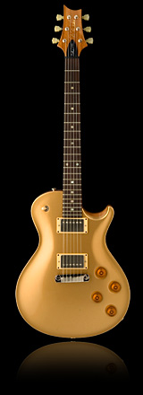

The SC 245 is perfect for the more traditional single-cutaway players. The 24.5" scale length and vintage appointments make this instrument instantly comfortable to players who grew up using short scale guitars. The new SC 245 pickups and their placement under the strings give the instrument a voice that is classic, eminently recordable and gig ready.